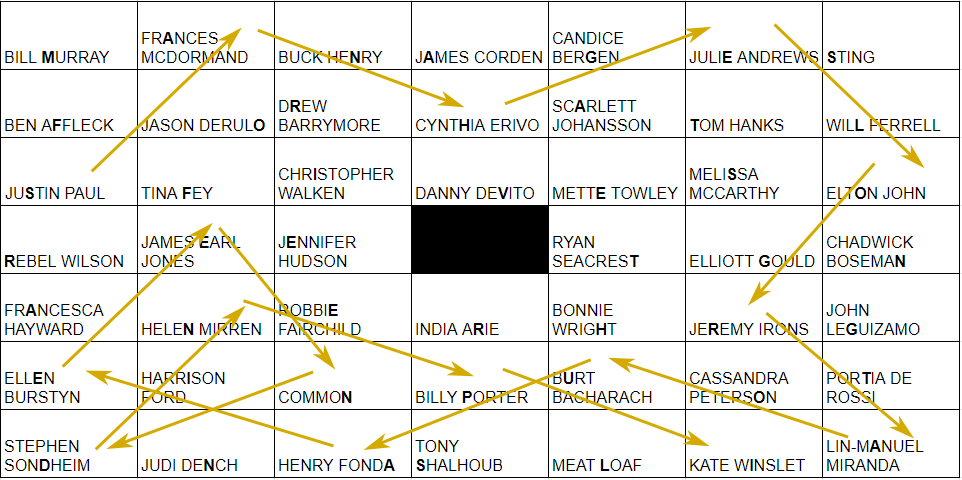
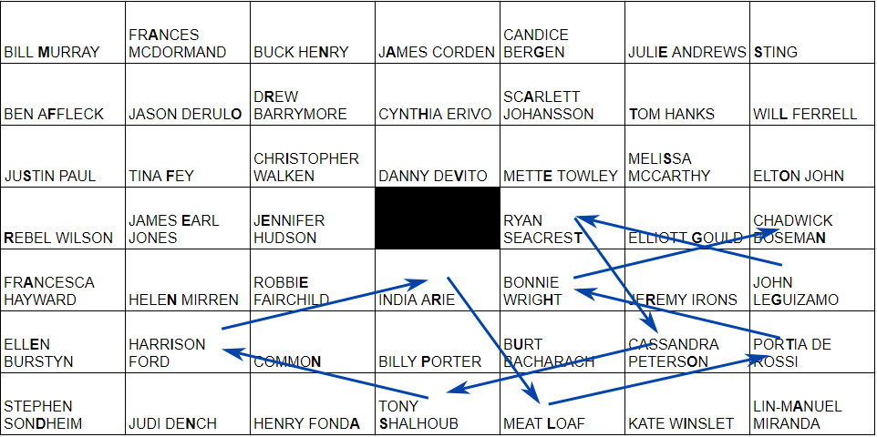
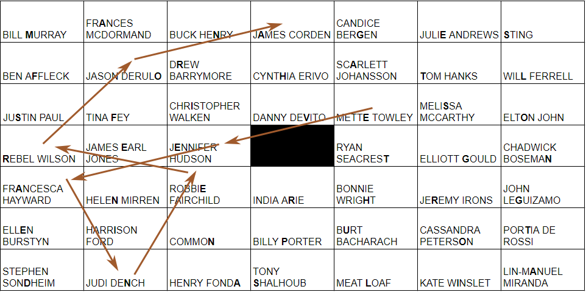
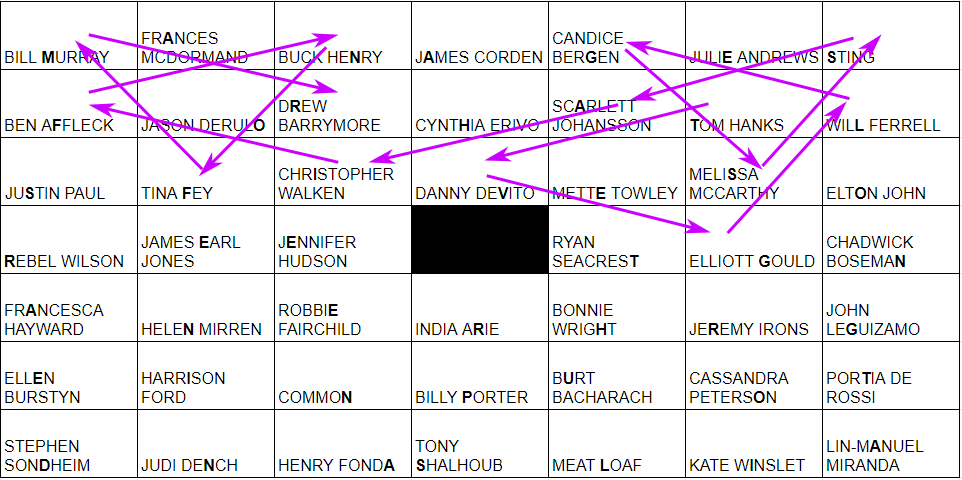

The Zoom gallery of cat-lawyers (well, only one is actually a lawyer) is a set of audio clips identifying different celebrities. The numeric buttons below the gallery each play a conversation between two people that simultaneously highlights two speakers: the first one outlined by a full yellow border, and the second marked with a single border below. Each conversation suggests a way to group sets of celebrities:
Group the celebrities in their categories, and then notice that the flavortext mentions "horsing around" and "stable." This Zoom gallery is actually a single knight's tour broken up into four segments that have a single possible path between each set's start and end points, which are indicated by the first and second speaker highlights. Three of the paths have a specific order to help you along: the near-EGOT winners cycle through the four possible missing awards, the airport codes travel west to east, and the Cats singers each share a musical number with the previous Cats singer. (Sorry, we were never able to get a five-timers' club sequence to work, so they're random.)
The final grid of celebrities looks like this:
| BILL MURRAY | FRANCES MCDORMAND | BUCK HENRY | JAMES CORDEN | CANDICE BERGEN | JULIE ANDREWS | STING |
| BEN AFFLECK | JASON DERULO | DREW BARRYMORE | CYNTHIA ERIVO | SCARLETT JOHANSSON | TOM HANKS | WILL FERRELL |
| JUSTIN PAUL | TINA FEY | CHRISTOPHER WALKEN | DANNY DEVITO | METTE TOWLEY | MELISSA MCCARTHY | ELTON JOHN |
| REBEL WILSON | JAMES EARL JONES | JENNIFER HUDSON | RYAN SEACREST | ELLIOTT GOULD | CHADWICK BOSEMAN | |
| FRANCESCA HAYWARD | HELEN MIRREN | ROBBIE FAIRCHILD | INDIA ARIE | BONNIE WRIGHT | JEREMY IRONS | JOHN LEGUIZAMO |
| ELLEN BURSTYN | HARRISON FORD | COMMON | BILLY PORTER | BURT BACHARACH | CASSANDRA PETERSON | PORTIA DE ROSSI |
| STEPHEN SONDHEIM | JUDI DENCH | HENRY FONDA | TONY SHALHOUB | MEAT LOAF | KATE WINSLET | LIN-MANUEL MIRANDA |
The groupings and related knight's tours:

The three-letter airport code is highlighted in each person's name.



The dialogues display a list of extraction numbers in the black center square. When applied to the names in their set's sequence and filled in on the grid, you get this:
| M | A | N | A | G | E | S |
| F | O | R | H | A | T | L |
| S | F | I | V | E | S | O |
| R | E | E | T | G | N | |
| A | N | E | R | H | R | G |
| E | I | N | P | U | O | T |
| D | N | A | S | L | I | A |
In a spiral starting from upper left, the grid reads MANAGES LONG TAILS AND EARS FOR HATS GROUP NINE FIVE THREE. This is a reference to a line in the Josie and the Pussycats theme song along with an enumeration, pointing to the answer ALEXANDER CABOT III.